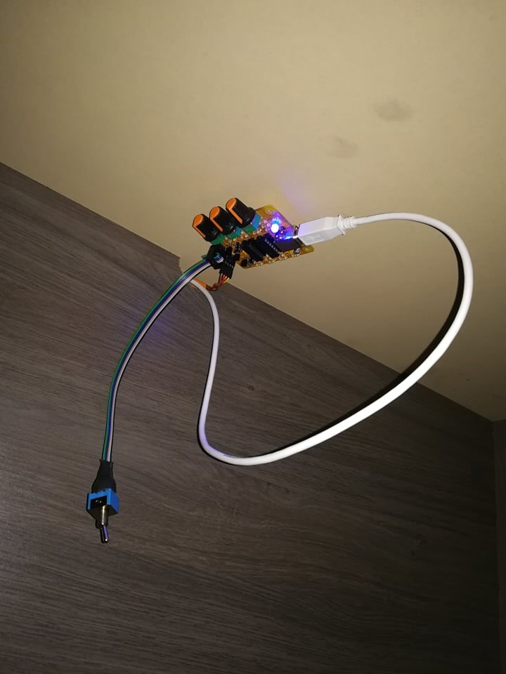
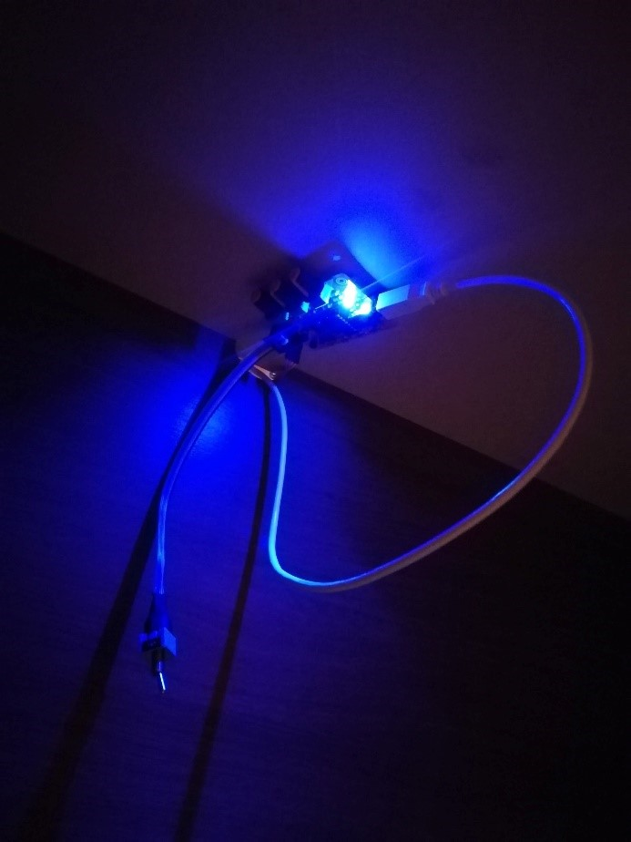
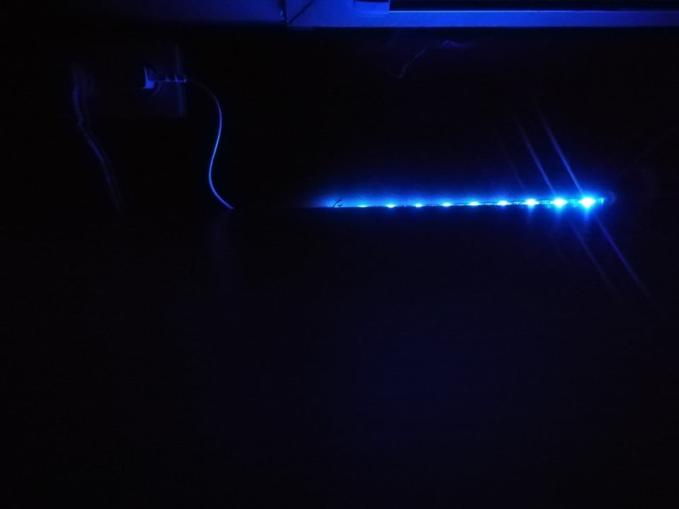
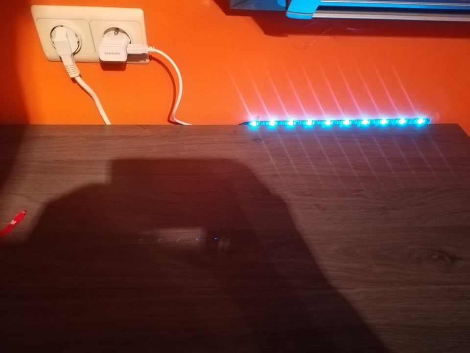

werking en foto
Nadat alles mooi gesoldeerd was zochten we een toepassing om deze LED-strip dan ook te gaan gebruiken.
Die oplossing vonden we op het kot waar we dit project afgerond hebben.
We vonden dat zijn bureau nog een upgrade kon gebruiken met wat extra licht, om dit te kunnen realiseren hingen we de LED-strip vast aan de muur.
Om de PCB een beetje weg te werken zodat we een mooier zicht hadden besloten we om deze onder de bureau te hangen met behulp van kittenband.
Dit alles gaf dit mooie resultaat:




home